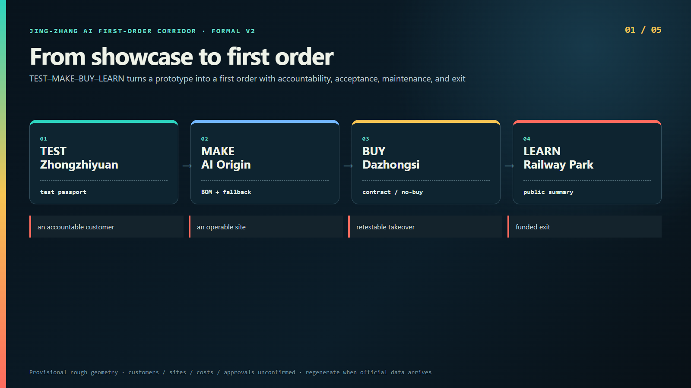
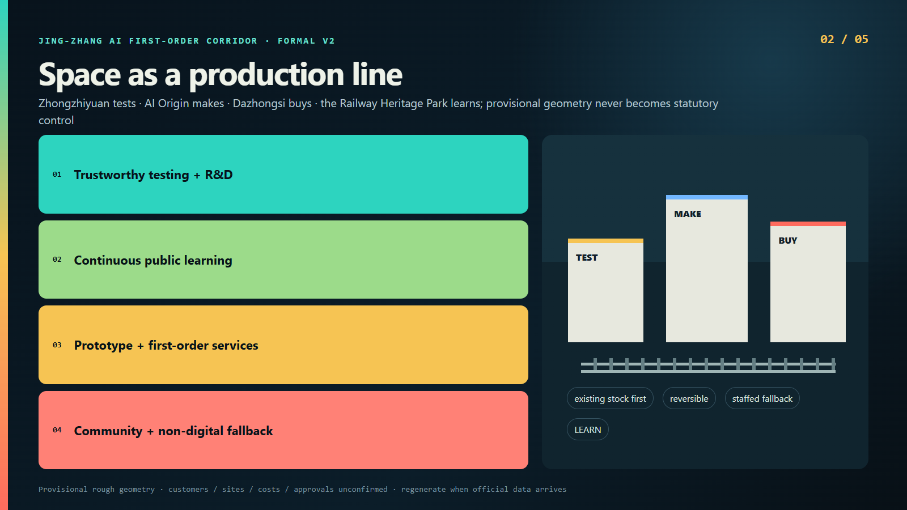
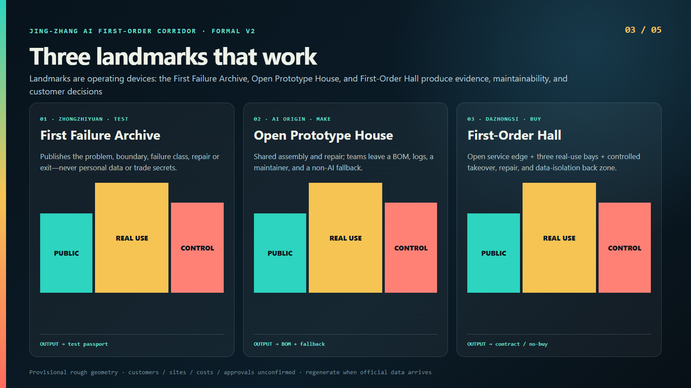
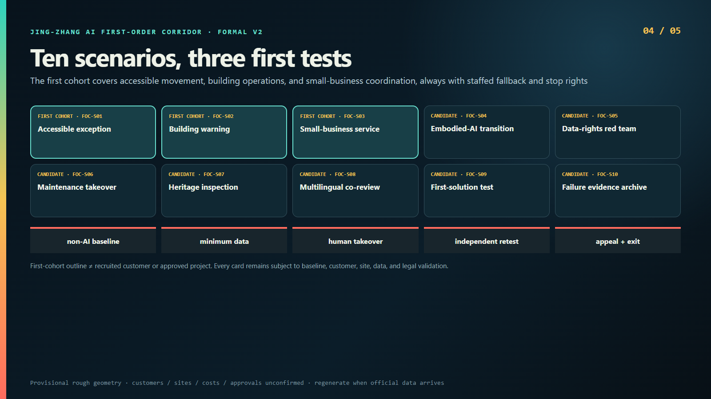
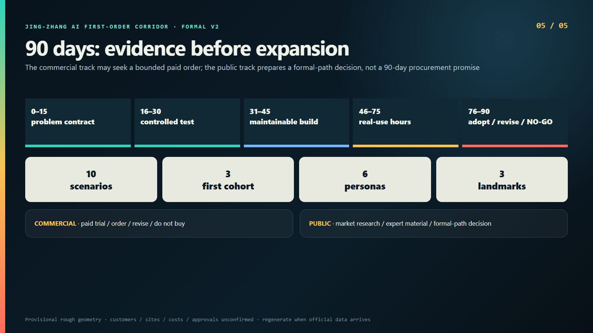

JING-ZHANG AI FIRST-ORDER CORRIDOR · FORMAL V2
From showcase to first order
TEST–MAKE–BUY–LEARN turns a prototype into a first order with accountability, acceptance, maintenance, and exit
中文




Structured review index
Overview MapThree-Level ScopeKey AreasLand-Use ZonesMobility and WalkingBlue-Green Public SpaceBuildingsRenewal ProjectsAI ScenariosCore MetricsTask CoverageSelf-Check StatusSourcesAssumptions
Provisional-geometry recalculated metrics
site_area_sqm11412825.386
green_ratio0.123423
public_space_ratio0.073281
Provisional rough geometry · customers / sites / costs / approvals unconfirmed · regenerate when official data arrives